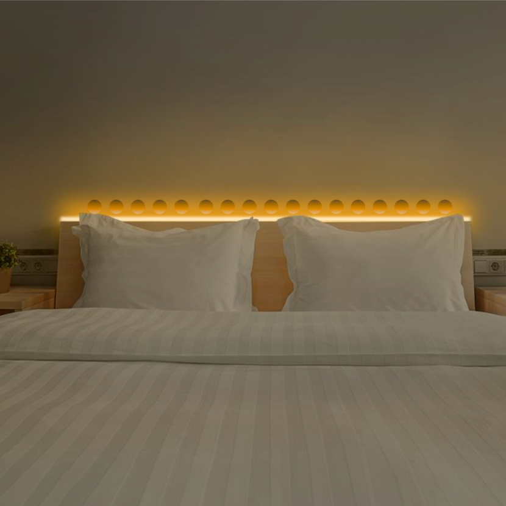
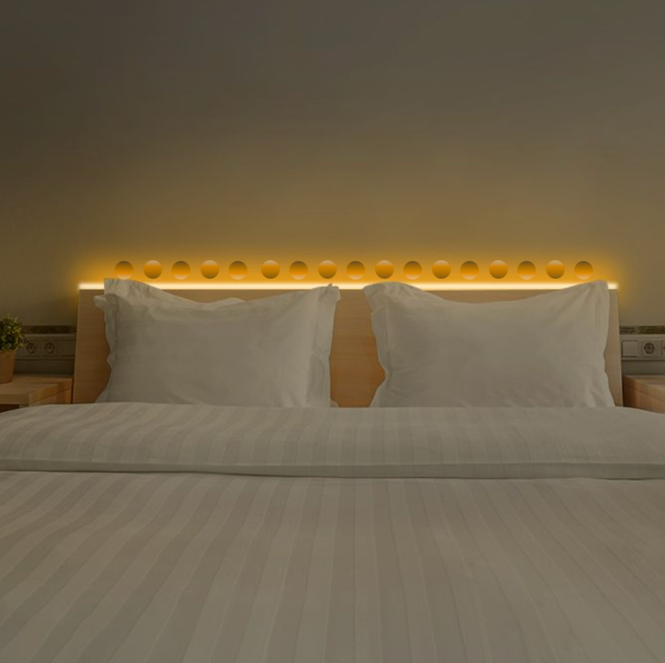
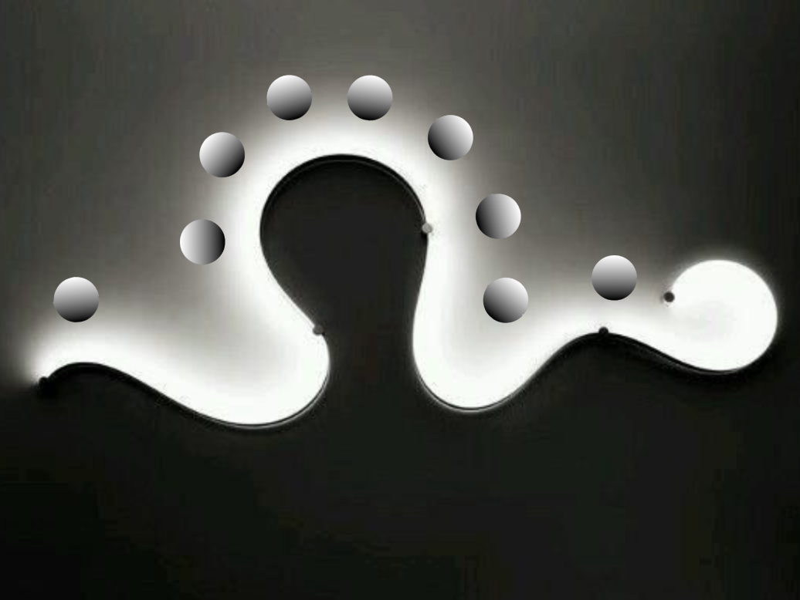
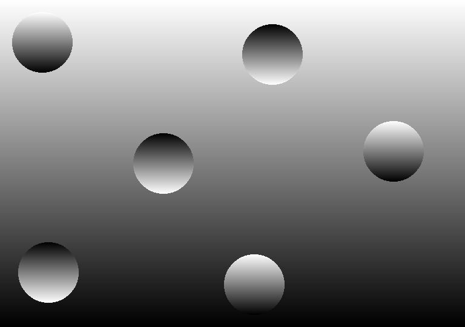
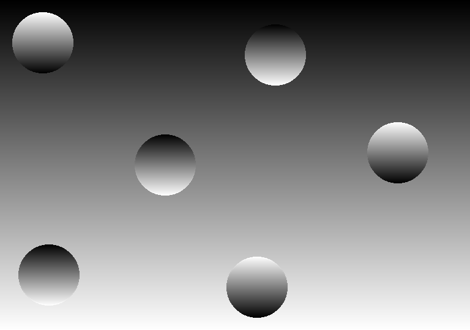
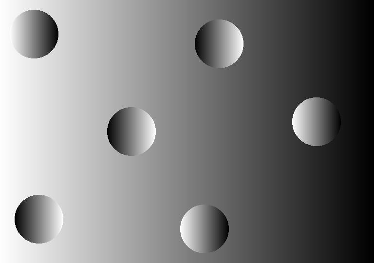
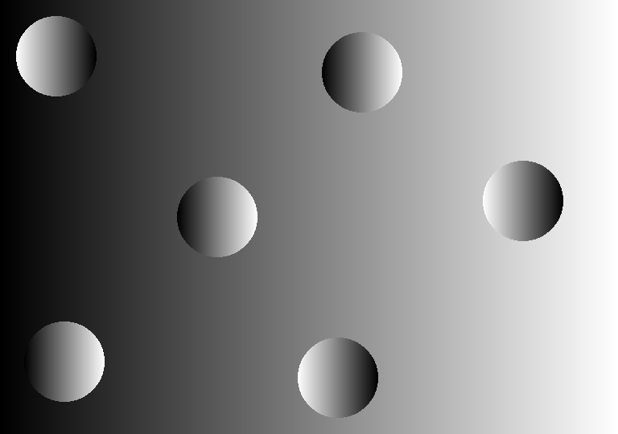

9.35 Illusion Laboratory
Spring 2023 Vision Lab

Can strong evidence that conflicts with priors of light sources coming from above affect the inference of illumination?
Previous studies have shown that the human visual system is able to perceive the three-dimensional shape of an object from a two-dimensional image by using variations in image intensity. In class, we saw how this derivation of shape from shading is greatly affected by humans' strong prior of assuming light sources to be coming from above. This leads to spheres with opposite intensity gradients appearing as either bumps or craters, and can even make images of craters and sand dunes unrecognizable if they are flipped upside down.
In the present study, we hope to learn more about how the visual system responds when this prior contradicts the contextual information in an image and whether the amount of image context affects perceived shape. For example, if humans are presented with an image where the light source is clearly coming from below, will the craters now be perceived as bumps? And, if the image appears to be in a real-life scenario, does this strengthen the effect? There are three possible responses:
1. The prior is unaffected by evidence of other light source locations.
2. Light source location dominates over the prior.
3. Light source location dominates over the prior in a gradient form, where more evidence against
the prior strengthens the effect of the light source on perceived shape.
To test this, we created different images where the light source is seen coming from above, below, left, and right in settings with more or less image information. If the prior of light from above is unaffected, then the perceived shape of the spheres should not change across light source locations or settings. If context dominates over the prior, then perceived shape should change with different light source locations regardless of setting. If more context strengthens the percept and the use of light source over priors, then the illusion of the shapes being aligned with the light source should be stronger in the setting with more context.
More context with light from below and congruent spheres:
More context with light from below and incongruent spheres:
More context with light from below and both types of spheres:
More context with light from varying sources:
Less context with light from above:
Less context with light from below:
Less context with light from the left:
Less context with light from the right:
Inspired by Ramachandran, V. S. “Perception of Shape from Shading.” Nature, vol. 331, no. 6152, Jan. 1988, pp. 163–166, https://doi.org/10.1038/331163a0. Accessed 12 Apr. 2020.